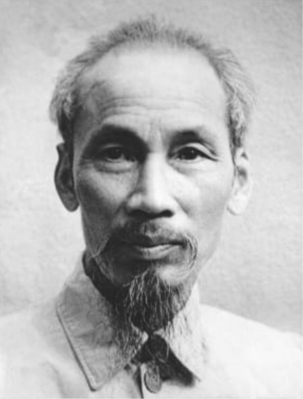

ARMA DA CRÍTICA
Órgão Central da Liga Comunista Brasileira (LCB)
Brasil, 29 de abril de 2025 - Nota 017 - Ano VII
NASCE A LIGA COMUNISTA BRASILEIRA!
A Iniciativa Comunista e a Organização Comunista Arma da Crítica completaram com êxito seu processo de Unificação em Conferência realizada em Campinas, nos dias 26 e 27 de abril. Surge a Liga Comunista Brasileira - LCB.
A LCB reivindica a tradição dos comunistas desde 1922 e se propõe a defender as aspirações da classe trabalhadora no Brasil. É uma organização que tem O socialismo no seu horizonte estratégico, ao mesmo tempo que trabalha para dar coesão às lutas cotidianas dos trabalhadores e do povo.
No artigo 20 dos seus estatutos, aprovados na Conferência de Unificação, a LCB "tem como princípios":
- a defesa incondicional das aspirações e interesses da classe trabalhadora;
- o internacionalismo proletário e a autodeterminação dos povos;
- a luta antiimperialista e antifascista;
- a defesa da soberania nacional e das liberdades democráticas;
- a unidade da luta dos trabalhadores e dos setores populares contra a exploração e a opressão;
- o acesso à terra para quem nela trabalha e a preservação do meio ambiente;
- a defesa dos povos indígenas, quilombolas e populações ribeirinhas à terra, a água e a seus modos de vida tradicionais;
- a emancipação da mulher, a superação do racismo, da LGBTFobia, do capacitismo e do etarismo;
- a luta por uma sociedade justa, fraterna e solidária, a sociedade socialista, rumo ao comunismo.
Desde já, a LCB quer estabelecer o diálogo com outras organizações comunistas e de esquerda para construir uma pauta comum de lutas. A LCB conclama a classe trabalhadora a desenvolver suas lutas e organização, no rumo de retomar o protagonismo dos trabalhadores e do povo na cena nacional.
Viva a Liga Comunista Brasileira!
RETOMAR AS LUTAS PARA RECUPERAR DIREITOS E AVANÇAR NAS CONQUISTAS
Desde a última década, a classe trabalhadora brasileira tem sofrido um ataque sistemático aos poucos direitos sociais e trabalhistas duramente conquistados. A reforma trabalhista feita pelo governo Temer aumentou a precariedade; a terceirização ilimitada, julgada como constitucional pelo STF, aumentou essa precarização; a reforma da previdência de Bolsonaro restringiu ainda mais o direito à aposentadoria; o arcabouço fiscal proposto pelo governo Lula limita o aumento dos gastos e, para ser cumprido, ameaça acabar com os pisos constitucionais em saúde e educação.
Vemos como todos esses ataques independem de coloração partidária ou verniz ideológico. Expressam a agenda do capital, cuja força política nas atuais circunstâncias tem sido capaz de impor seus interesses. Todos os ramos do aparelho de Estado têm sido colocados, pela burguesia brasileira associada ao imperialismo, a serviço de um projeto cujo programa quer arrasar com qualquer traço de soberania nacional e colocar todo o país como um espaço submetido aos interesses da acumulação capitalista desenfreada.
Só há um caminho para tirar o Brasil dessa situação: a classe trabalhadora precisa confiar em suas próprias forças e retomar o caminho da luta e da organização.
É na luta de massas que seremos capazes de reverter o resultado desse jogo. Só assim poderemos recuperar os direitos atacados e avançar nas conquistas. Será um grande desafio recolocar a massa trabalhadora em movimento. Porém, o grau de exploração a que está submetida expõe sem maquiagem as contradições sociais.
Mesmo que o rendimento médio tenha crescido 3,6% entre fevereiro de 2024 e fevereiro deste ano, isso foi insuficiente para acompanhar o preço dos alimentos, que registrou alta em 2024 de 7,60% de acordo com o INPC do IBGE. Isso abre espaço para a classe trabalhadora retomar a experiência de lutas contra a carestia.
Outra contradição exposta na atual conjuntura é a desumana escala de trabalho 6x1. O 1º de Maio tem sua origem na luta da classe trabalhadora por reduzir a jornada de trabalho para 8 horas diárias e 40 horas semanais. Hoje, no Brasil, a jornada de trabalho oficial é de 44 horas, garantida na Constituição de 1988. Por causa das horas-extras, a jornada real é bem maior. No cenário brasileiro atual, o trabalhador se tornou um escravo dos patrões, sem tempo para descansar, ficar com a família, estudar e se divertir. As longas jornadas, o trabalho desgastante, pressão exercida pelos patrões, ambiente de trabalho competitivo e tóxico, salário baixo, medo do desemprego e o corre diário fazem do Brasil o campeão mundial de pessoas com transtorno de ansiedade e o em segundo síndrome de Bornout (distúrbio emocional que causa esgotamento físico).
A luta contra a escala 6 x 1, hoje, é a luta da classe trabalhadora para não enlouquecer e nem morrer de esgotamento. Queremos a implantação da escala 3 x 4, com uma redução da jornada para 30 horas semanais. Segundo pesquisa da FGV (Fundação Getúlio Vargas), a produtividade por hora trabalhada cresceu 40% entre 1995 e 2021, sem que a jornada tenha sido reduzida. O cenário aqui descrito mostra que apesar das dificuldades há espaço na conjuntura para a classe trabalhadora se organizar e se colocar em movimento. É nas lutas contra os efeitos mais imediatos da exploração capitalista que desperta a consciência popular para a necessidade de se alcançar transformações profundas em nosso país. Que este 1º de Maio seja um ponto de virada importante na luta de classe brasileira.
30 DE ABRIL-50 ANOS DA VITÓRIA DO POVO VIETNAMITA
Em 30 de abril de 1975, os patriotas vietnamitas conquistaram Saigon, então capital do Vietnã do Sul. Alcançava-se definitivamente a independência nacional e se colocava fim a 30 anos de guerras contra forças invasoras estrangeiras.
Nesse período, o povo vietnamita derrotou sucessivamente o exército imperial japonês em 1945, O exército colonial francês em 1954 e o exército imperialista estadunidense em 1975. Tamanho feito heroico inscreve a luta do povo vietnamita entre as mais importantes vitórias dos povos colonizados de todo o mundo.
Depois de derrotarem as tropas francesas na batalha de Dien Bien Phu, em 1954, tiveram de começar uma guerra para garantir a unificação do país, pois o mesmo havia sido dividido pelos Estados Unidos, que manteve um regime fantoche no sul. Não se pode esquecer, todavia, o seu alto custo em vidas. Estima-se que mais de 3,5 milhões de vietnamitas, cambojanos e laocianos, que formavam a antiga colônia francesa da Indochina, morreram entre 1955 e 1975. No. auge da luta por sua independência, entre as décadas de 1960 e 1970, o Vietnã foi o símbolo do patriotismo revolucionário e da capacidade que os povos do mundo tem de derrotarem o imperialismo.
Dentre os líderes da geração de vietnamitas que empreendeu a luta contra a espoliação colonial se destaca a figura de Ho Chi Minh. Grande estrategista, com agudo sentido tático, Tio Ho, como era chamado carinhosamente pelo povo, foi capaz de forjar um partido revolucionário e unir toda a nação em suas mais diferentes etnias na luta contra inimigos muito mais poderosos. Ho Chi Minh, além de grande líder revolucionário, era também poeta. Escreveu alguns desses poemas quando esteve preso na China, em 1942, cumprindo tarefa partidária de organizar OS revolucionários vietnamitas no exílio. Em sua homenagem divulgamos aqui alguns desses poemas publicados pela primeira vez no Brasil pela editora Laemmert.
DIÁRIO DA PRISÃO
Aqui teu corpo está preso na cela.
Teu espírito não. Ele está livre.
Se queres continuar a tua missão,
deves manter elevado o teu moral
MÔ, O CARCEREIRO DE PIN YANG
Mô, guarda Pin Yang, a fama de bravura,
Com seu próprio dinheiro alimenta os detidos.
Liberta-os dos grilhões para que à noite durmam.
Segue seu sentimento e não a autoridade.
QUATRO MESES JÁ
"Um dia encarcerado:
mil anos lá fora".
Não é vã palavra
este provérbio antigo.
Quatro meses na cela
destruíram meu corpo
mais que dez anos de vida.
Quatro meses de fome,
quatro meses de insônia,
sem mudar de roupa,
sem me poder lavar.
Abandonou-me um dente,
cabelos branquearam,
negro, magro, faminto,
vestido de sarnas e de feridas.
Mas, paciente sou,
duro, rijo, sem recuar um palmo.
Materialmente miserável,
o moral, firme.